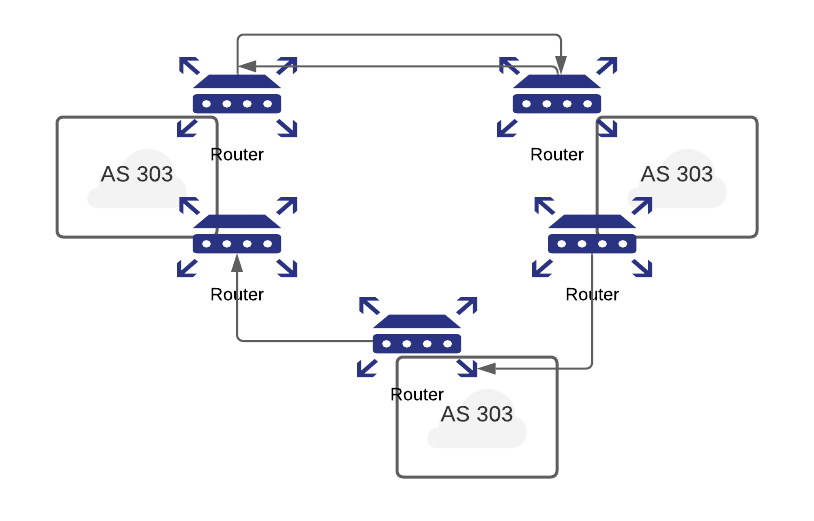

第三部分：威脅、攻擊與防禦
DNS 保護
暫存污染攻擊
- 由於 DNS 回應會被暫存，可以針對重複的轉譯提供更快速的回應。DNS 的負查詢也會被暫存，例如拼字錯誤的詞彙，且所有暫存資料會定期過期。
- 暫存污染問題出現在所謂的「藥劑農業（pharming）」攻擊中。此術語用於描述駭客透過偽造 DNS 映射，將網站流量重新導向到偽造網站的攻擊。在此情況下，攻擊者試圖在 DNS 中插入一條假的網域地址記錄。
- 若伺服器接受了假的記錄，暫存即遭污染，後續對該網域地址的請求將回傳由攻擊者控制的伺服器地址。只要該假條目被伺服器暫存，瀏覽器或電子郵件伺服器將自動導向遭竄改的 DNS 伺服器提供的地址。
- 暫存條目的典型存活時間（TTL）為幾個小時，足以影響大量使用者。
DNSSEC（安全擴展）
- 長遠解決 DNS 問題的方法是認證。若解析器無法分辨有效或無效的回應資料，則需加入來源認證來驗證所接收資料與區域管理者所輸入資料一致。
- DNS 安全擴展（DNSSEC）防範資料偽造與破壞，且提供認證伺服器和請求機制，以及確保真實性與完整性的機制。
- 在認證 DNS 回應時，每個 DNS 區域會以私鑰對資料簽章。建議預先離線進行此簽章。查詢特定記錄會回傳請求的資源記錄集（RRset）以及其簽章（RRSIG）。解析器再利用預先設定或透過 DNS 階層鍵記錄學習的公鑰進行認證。
- DNSSEC 的目標是提供 DNS 回應的認證與完整性，不包含機密性或 DDoS 防護。
BGP
- BGP 即邊界閘道協定（Border Gateway Protocol），是一種在多個自治系統（AS）間交換路由資訊的路由協定。
- 自治系統指擁有相同網路政策且通常由單一行政機構控制的一組路由器或網路。
- BGP 指示路由器如何選擇下一跳以達到目標網路。
- BGP 用於自治系統內部路由器間（內部）及多自治系統之間（外部）的資訊傳遞。

BGP 運作原理
- BGP 負責尋找到達目的地路由器的路徑，且選擇的路徑應為最短且最可靠者。
- 此決策透過一種稱為連結狀態（Link state）的協定完成。在連結狀態協定中，每個路由器向所有其他路由器廣播其連結與 IP 子網狀態，各路由器收到資料後建立完整的網路拓撲視圖，下一跳路由表基於此視圖。
- 連結狀態協定使用電腦科學領域著名的 Dijkstra 最短路徑演算法：
- 從本路由器出發，先考量到直連鄰居的路徑成本。
- 接著選擇最短路徑。
- 然後重新檢視可到達的鄰居，更新連結狀態表的成本資訊，持續依此方式直到所有路由器皆被遍歷。
BGP 弱點
- 透過破壞 BGP 路由表，我們即可影響 internet 上的流量路徑！此行為稱為 BGP 劫持。
- 惡意來源、錯誤或路由器注入虛假路由廣告資訊至 BGP 分散式路由資料庫，可能干擾 Internet 主幹運作。
- 黑洞流量：
- 黑洞路由為通往「無處」的網路路由，符合此路由前綴的封包會被丟棄或忽略。黑洞路由僅能透過監控流失流量偵測。
- 黑洞路由是對抗病毒攻擊的最佳防禦手段，病毒會讓流量從被感染機器往返指揮控制主機時被丟棄。
-
著名的 BGP 注入攻擊曾發生在 Youtube。
-
範例：2008 年巴基斯坦企圖封鎖 YouTube，創建一條導向黑洞的 BGP 路由，卻意外被香港 ISP 傳播到全球，數百萬人皆因而被導入黑洞，無法存取 YouTube。
- BGP 最大風險是阻斷攻擊，其中路由器被大量封包淹沒，導致資源耗盡。當網路承載過多 BGP 訊息，會使路由器控制處理器、記憶體、路由表過載，減少資料流量頻寬。
- 參考資料：https://medium.com/bugbountywriteup/bgp-the-weak-link-in-the-internet-what-is-bgp-and-how-do-hackers-exploit-it-d899a68ba5bb
- 路由振蕩（router flapping）也是一種攻擊，指 BGP 路由表在短時間多次變更（例如每秒 30-50 次），撤回和重新公告路由。快速變動會造成路由器過載，阻礙收斂有效路由，對使用者來說導致訊息傳送延遲或封包遺失。
BGP 安全措施
- 建議使用 BGP 對等認證（peer authentication）作為防止惡意行為的強力機制。
- 認證機制包括網路協定安全性（IPsec）或 BGP MD5 驗證。
- 另一方法為前綴限制（prefix limits），防止路由表填滿。路由器可設定在鄰居超過預設路由前綴數量時，停用或終止 BGP 對等連線並發出警示。
- IETF 正積極改進此領域技術。
網頁攻擊
HTTP 回應分割攻擊
- HTTP 回應分割攻擊發生在伺服器腳本未妥善淨化即嵌入用戶資料至 HTTP 回應標頭時。
- 常見於將用戶資料嵌入重定向回應（HTTP 狀態碼 3xx）的 URL 中，或在回應設定 Cookie 時將用戶資料嵌入 Cookie 名稱或值。
- HTTP 回應分割可被用於網頁緩存投毒及跨網站腳本（XSS）攻擊。
- 攻擊者藉由單一 HTTP 請求強迫網頁伺服器產生兩個 HTTP 回應輸出流，目標將此視為兩份回應而非一份。
跨站請求偽造（CSRF 或 XSRF）
- 跨站請求偽造攻擊誘騙受害者瀏覽器向脆弱網站發出指令。
- 脆弱性源自瀏覽器會自動包含用戶認證資料、會話 ID、IP 位址、Windows 網域憑證等資訊於每次請求中。
- 攻擊者常藉 CSRF 發起交易如轉帳、用戶登入/登出、關閉帳戶、存取敏感資料及更改帳戶細節。
- 瀏覽器自動包含憑證導致此脆弱性，且 CSRF 可與跨站腳本結合產生動態載荷。
- 所有依賴自動憑證的網站皆易受攻擊。流行瀏覽器無法完全防範 CSRF，盡快登出高價值網站可緩解風險。建議高價值網站要求用戶在同一 HTTP 請求中手動提供認證資料，並限制會話 Cookie 的有效期限以降低風險。
- OWASP 建議網站開發者為敏感操作請求加入必需的安全 token 以防 CSRF。
跨站腳本（XSS）攻擊
- 跨站腳本發生於動態產生的網頁顯示未經妥善驗證的用戶輸入資料，如登入資訊，攻擊者據此植入惡意腳本並於任何瀏覽此頁的用戶瀏覽器上執行。
- 成功利用 XSS 漏洞可操弄或竊取 Cookie，偽造有效用戶請求，洩露機密資訊，甚至執行惡意程式碼。
- XSS 攻擊發生於受害者瀏覽器端，因網頁應用未完成用戶輸入驗證造成。
DOM XSS 攻擊
- 基於文件物件模型（DOM）的 XSS 不需網頁伺服器收到 XSS 負載；攻擊者直接在客戶端嵌入資料操控 DOM。
- 當頁面渲染並處理客戶端 HTML 內嵌腳本比如 JavaScript 時，頁面程式碼若不安全地嵌入此資料，即釋放跨站腳本負載。多個 DOM 物件可用作攻擊載具。
點擊劫持
- 此技巧將惡意連結或腳本藏於正當網站內容之下。
- 網站按鈕實際上隱藏著看不見的連結，使用者點擊可視對象時，實則被欺騙前往惡意頁面或執行惡意腳本。
- Facebook 用戶曾遭遇點擊劫持，誘使用戶點選「按讚」特定頁面，助長惡意攻擊自 2010 年陣亡紀念日後擴散。
- 尚未有有效防禦方法，唯一可行的方式是禁用 JavaScript。
資料庫攻擊與防禦
SQL 注入攻擊
- 利用資料庫查詢的輸入驗證不足。
- 成功攻擊能允許入侵者存取、修改或刪除資料庫中資訊。
- 可偷取後端資料庫中敏感資料，如用戶憑證、電子郵件地址、個人訊息及信用卡號。
SELECT USERNAME,PASSWORD from USERS where USERNAME='<username>' AND PASSWORD='<password>';
此處 username 與 password 是使用者輸入。若攻擊者在兩欄位輸入 OR '1'='1'，SQL 查詢將成為：
SELECT USERNAME,PASSWORD from USERS where USERNAME='' OR '1'='1' AND PASSOWRD='' OR '1'='1';
此查詢結果永遠為真，使用者直接登入。此為最基本的 SQL 注入範例。
抵禦 SQL 注入攻擊
- 可藉由過濾查詢以消除惡意語法，比如利用工具掃描原始碼。
- 輸入欄位應限制在最小，通常 7-12 字元以內，並驗證資料型態，如輸入年齡必須為最多 3 位數字的整數。
VPN
虛擬私有網路（VPN）是一種服務，透過公用網路（例如 Internet）提供安全可靠的連線。Cisco 定義 VPN 為私有網路間透過加密的連結。至今 VPN 分為三種：
- 遠端存取
- 站對站
- 防火牆基礎
資安事件
儘管采取最強烈的防護措施，攻擊者仍可能突破。任何違反機密性（Confidentiality）、完整性（Integrity）或可用性（Availability，稱 CIA）安全原則的事件，都屬於資安漏洞。
拒絕服務攻擊（DoS）
- DoS 攻擊造成系統停機或使用者無法存取。DoS 攻擊影響資訊系統的可用性安全原則。此為協調式企圖阻擋服務，透過讓電腦處理大量無必要工作使系統無法提供合法服務。
- 兩種常見 DoS 攻擊如下：
- 邏輯攻擊 — 利用軟體缺陷使遠端伺服器崩潰或嚴重效能下降。安裝最新的補丁有助防範。
- 淹沒攻擊 — 透過發送大量無用請求，淹沒目標主機的 CPU、記憶體或網路資源。
- 多數 DoS 攻擊瞄準系統架構弱點，而非軟體錯誤或安全缺陷。
- 常見封包淹沒技術為 SYN 淹沒攻擊。
- 最佳防禦為使用入侵防護系統（IPS）軟體或設備以偵測並阻止攻擊。
分散式拒絕服務攻擊（DDoS）
- DDoS 與一般 DoS 不同在規模。攻擊者操控數百甚至數千台網路電腦，植入自動攻擊代理，指示代理轟炸目標站點，導致站點過載阻擋合法流量。此攻擊重點為數量優勢。
竊聽
- 雖然竊聽多與語音電話相關，攻擊者同樣能竊聽資料通訊。
- 攻擊者可竊聽電話線及資料傳輸線路。竊聽可分主動（攻擊者修改線路資料）及被動（攻擊者僅監聽而非更動）。被動竊聽亦可複製資料為日後攻擊做準備。
- 主動竊聽包含：
- 線中竊聽 — 未更改合法傳送訊息，但於合法用戶暫停時插入額外訊息。
- 順帶入侵竊聽 — 攔截並修改原始訊息，將訊息導向另一臺充當主機的電腦。
後門
- 軟體開發者有時在程式中埋藏稱為後門的隱藏存取途徑，讓開發或維護人員能輕鬆存取系統，繞過安全控制。
- 問題是後門不一定能長期隱藏，駭客若發現便能繞過密碼、加密等安全措施。合法用戶從前門登入（帳號密碼），攻擊者則利用後門繞過。
惡意攻擊
生日攻擊
- 攻擊者入侵哈希密碼檔案後，執行生日攻擊。此種密碼攻擊透過數理機率（生日問題）加快單向雜湊的暴力破解。
- 延伸閱讀：
暴力破解密碼攻擊
- 攻擊者透過嘗試大量密碼組合，直至成功登入。通常利用程式快速連續嘗試可能的密碼、帳號或安全碼，直到配對成功。
- 無技巧，僅靠蠻力反覆嘗試，故稱暴力破解。
- 延伸閱讀：
字典密碼攻擊
- 依賴使用者密碼選擇差做作簡單攻擊。破解程式將字典檔中每一詞條嘗試作為密碼登入。
- 延伸閱讀：
重放攻擊
- 攻擊者攔截網路封包並重複傳送，用以達成未經授權目的。接收重複之經驗證 IP 封包可能破壞服務或產生非預期結果。
- 攻擊者藉重放舊訊息或部分訊息欺騙系統用戶取得資料並非法存取系統。
- 延伸閱讀：
- https://study.com/academy/lesson/replay-attack-definition-examples-prevention.html
中間人攻擊（MitM）
- 利用多跳方式的網路特性，攻擊者攔截雙方訊息並再轉發至目的地。
- 網頁欺騙為 MitM 一環，使用者以為與網站建立安全連線，實際與攻擊者而非伺服器。攻擊者亦與伺服器建立安全連線，充當隱形中介，騙取密碼、信用卡等私密資訊。
- 延伸閱讀：
偽裝攻擊
- 攻擊者假冒他人用戶或電腦。常與其他主動攻擊如 IP 位址偽造、重放結合。
- 入侵者可截取認證序列，後續重放第二次登入應用程式或作業系統。範例：監控用戶名與密碼取得後，冒名登入網頁。
- 延伸閱讀：
竊聽攻擊
- 又稱封包監聽，當主機網路介面設為混雜模式，能截取周圍網路所有封包以供分析。
- 混雜模式使網路設備即使封包位址不匹配也能攔截並讀取封包。
- 能透過硬體與軟體監控並分析傳輸媒介上的所有封包而不被用戶察覺。
- 典型監聽目標為衛星、無線、行動等傳輸型態。
社交工程
- 攻擊者利用欺騙手法，誘騙授權用戶執行未授權行為以侵入 IT 基礎設施。
- 幾乎所有社交工程皆倚賴人類普遍樂於助人之特性。
電話駭客（Phreaking）
- 指一群研究、試驗或探索電話系統、電話設備及公共電話網路相連系統的次文化活動。
- 電話駭客技巧在於利用電話系統漏洞與缺陷。
網路釣魚（Phishing）
- 一種詐騙手法，攻擊者試圖誘使受害者提供私人敏感資料，如信用卡號、密碼、出生日期、銀行帳號、ATM 密碼及社會安全號。
域名欺騙（Pharming）
- 另一種透過域名偽裝取得個人或財務資料的攻擊。不同於以訊息誘使訪客前往偽造網站的釣魚，域名欺騙利用 DNS 伺服器的 DNS 污染（DNS poisoning），當用戶輸入偽造伺服器網址時，瀏覽器實際導向攻擊者網站。瀏覽器仍顯示正確網域，使其難以察覺因而更嚴重。
- 釣魚是個別誘騙電子郵件或即時訊息，而域名欺騙能同時攻擊多數使用者。